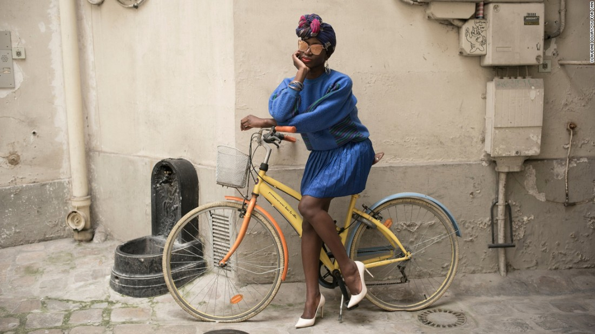

Youthful and effortlessly cool: Celebrating true Parisian style
Home to some of the world's most prestigious couturiers, and the birthplace of high fashion brands like Chanel, Dior and Yves Saint Laurent, Paris is without doubt a major fashion capital. But away from the front rows and closed doors of high fashion houses there's a new current surging through the city -- one that the luxury sector is growing increasingly fond of and inspired by: street style. The looks and trends conceived from art schools, music concerts and the bedrooms of Paris' creative youth.
This week, as crowds flock to Paris for the 2016 French Open -- perhaps one of the more provocative tennis events when it comes to attire -- we asked French photographer Claudine Doury to turn her lens to the Parisians who reinterpret style on the streets, breathing fresh life into the time-honored phrase, "effortlessly chic." Here's what she discovered...